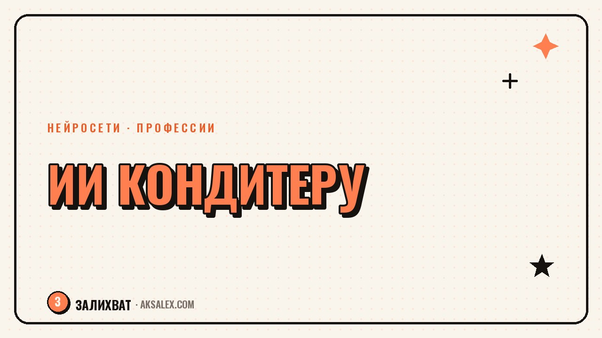

Нейросети для кондитера: меню, расчёт и соцсети

У кондитера, который работает на себя, помимо выпечки есть ещё расчёт себестоимости, переписка с клиентами, фото для соцсетей и подписи под ними. На всё это уходит не меньше времени, чем на сам торт. Нейросети не заменят руки и вкус, но снимут часть рутины вокруг: посчитают примерную калькуляцию, помогут собрать текст для клиента и подготовят описание для карточки товара или поста.
Где нейросеть реально помогает кондитеру
Первая зона - расчёты. Себестоимость торта складывается из десятка позиций: мука, масло, наполнитель, упаковка, газ или электричество, время работы. Текстовые нейросети - ChatGPT, YandexGPT, GigaChat - помогают быстро прикинуть структуру расчёта: перечисляешь ингредиенты и их цену, просишь свести это в таблицу с итоговой суммой и наценкой.
Вторая зона - тексты и фото для продвижения. Нужно описание для карточки в Авито или ВК, подпись под фото нового торта, ответ клиенту на вопрос про состав - нейросеть собирает черновик за минуту, кондитеру остаётся проверить и подправить под свой тон.
Три группы задач, которые стоит отдать ИИ
- Расчёты - черновик калькуляции себестоимости и ценника на новую позицию
- Тексты - описания тортов, подписи к фото, ответы на типовые вопросы клиентов
- Визуал - обложки для соцсетей, оформление меню, идеи для оформления заказа
Расчёт себестоимости и цены без калькулятора в голове
Многие кондитеры на старте считают цену на глаз - «плюс накину сверху» - и в итоге работают в минус, не замечая этого. Нейросеть не знает точных закупочных цен в конкретном городе, но хорошо помогает со структурой расчёта: просишь составить таблицу с графами «ингредиент - количество - цена за единицу - итог», вписываешь свои цифры, и получаешь понятную калькуляцию, которую можно пересчитывать под любой заказ.
Второй частый запрос - помощь с ценой на нестандартный заказ. Например, торт с мастикой и сложным декором: кондитер описывает объём работы, время на декор и используемые материалы, а нейросеть помогает прикинуть, сколько часов закладывать в расчёт и какая наценка типична для сложных заказов по рынку.
Нейросеть не знает реальных цен в твоём городе и не видела твой торт. Она помогает со структурой расчёта и формулировками, а точные цифры и итоговую цену кондитер всегда ставит сам.
Меню, описания тортов и ответы клиентам
Когда кондитер обновляет меню или готовит сезонную подборку - например, к Новому году или 8 марта - нужно быстро написать привлекательные описания для десятка позиций. Нейросеть помогает с черновиком: «ягодный торт с кремом на основе маскарпоне, лёгкая кислинка, подходит для летнего праздника» - такой текст можно получить за секунды, вставив название и состав.
- Описать состав и особенность торта в двух словах нейросети
- Попросить собрать короткое продающее описание для карточки или поста
- Проверить текст - убрать штампы и приукрашивания, которые не соответствуют реальному вкусу
- Сохранить удачные формулировки как шаблон для похожих позиций
Для переписки с клиентами нейросеть особенно выручает, когда одни и те же вопросы повторяются: сколько стоит доставка, можно ли без орехов, за сколько дней делать заказ. Можно собрать библиотеку готовых ответов и быстро адаптировать их под конкретного клиента, не печатая одно и то же заново каждый раз.
Фото и визуал для соцсетей без фотостудии
Хороший кадр торта продаёт лучше любого текста, но не у каждого кондитера есть время и свет для полноценной съёмки. Нейросети для обработки фото - например, встроенные инструменты в Canva или простые фоторедакторы с ИИ - помогают убрать лишний фон, выровнять цвет и подготовить карточку для соцсети за несколько минут.
Отдельная задача - обложки для актуальных сторис, шаблоны меню и прайс-листов. Нейросеть-дизайнер вроде Canva с ИИ-функциями собирает аккуратный макет по текстовому описанию, и кондитеру не нужно разбираться в графических программах, чтобы меню выглядело презентабельно.
Какие сервисы выбрать и сколько это стоит
Для кондитера, который начинает пробовать нейросети, важно не переплачивать за функции, которые не нужны. Ниже - сравнение сервисов под конкретные задачи кондитерского бизнеса.
| Сервис | Для чего | Бесплатно | Платно |
|---|---|---|---|
| ChatGPT | Расчёты, описания тортов, ответы клиентам | Да, с ограничениями | от 1000-2000 ₽/мес |
| YandexGPT | Тексты на русском без VPN | Да | встроено в сервисы Яндекса |
| Canva | Меню, обложки, прайс-листы | Да, базовый план | от 1000 ₽/мес Pro |
| Kandinsky | Фоновые картинки для карточек и постов | Да, с лимитом в день | от 300 ₽/мес |
| Google Таблицы + ИИ-надстройки | Автоматический пересчёт себестоимости | Да | платные надстройки опционально |
Разумно начать с бесплатного ChatGPT для текстов и расчётов и бесплатной Canva для визуала. Платные тарифы стоит подключать только когда заказов становится много и время экономии начинает превышать стоимость подписки.
Частые ошибки кондитеров при работе с ИИ
Главная ошибка - доверять нейросети точные цифры себестоимости без проверки. ИИ не знает актуальных цен в твоём магазине и может взять усреднённые данные, которые далеки от реальности. Расчёт от нейросети - это шаблон, а не готовая цифра для прайса.
- Не копировать описания тортов без проверки на соответствие реальному составу
- Проверять расчёт себестоимости по своим актуальным ценам, а не доверять цифрам ИИ
- Не обещать клиенту то, что нейросеть написала в тексте, если это не соответствует реальности
- Не указывать в промптах чувствительные данные о финансах бизнеса, если сервис бесплатный
Частые вопросы
Может ли нейросеть точно посчитать себестоимость торта?
Нет, она не знает актуальных цен в твоём городе и магазине. Нейросеть помогает собрать структуру расчёта - таблицу с ингредиентами и формулами, а точные цифры кондитер вписывает сам из своих чеков.
Какая нейросеть лучше всего пишет описания тортов на русском?
YandexGPT и ChatGPT одинаково хорошо справляются с описаниями на русском языке. YandexGPT работает без VPN, а ChatGPT иногда требует дополнительный доступ в зависимости от региона.
Нужна ли кондитеру платная подписка на нейросети?
На старте нет - бесплатных версий ChatGPT и Canva хватает для расчётов, описаний и простого визуала. Платный тариф имеет смысл, когда заказов становится много и время на рутину превышает стоимость подписки.
Можно ли доверять нейросети ответы клиентам напрямую?
Лучше использовать её как черновик. Нейросеть быстро собирает текст на типовой вопрос, но кондитер должен проверить формулировку и подставить реальные условия - сроки, состав, цену - перед отправкой клиенту.
Поможет ли нейросеть с фото тортов, если нет фотографа?
Да, частично. ИИ-инструменты в Canva помогают убрать фон, выровнять цвет и собрать карточку для соцсети, но саму съёмку торта нейросеть не заменит - качество кадра всё равно зависит от света и ракурса.
Раз тема оказалась полезной, вот что почитать следующим. Нейросети помогают логопеду готовить материалы для занятий, писать отчёты и экономить вечера. Разбираем, какие сервисы реально работают.
Читать статью →а не вручную